Relations (model)
Sommaire |
Introduction
Les classes métiers interagissent entre elles à travers des relations. Une relation est implémentée dans chaque classe métier qui y participe par un attribut particulier appelé rôle.
| Note : Les Relations correspondent aux Associations de la norme UML. En Ligne 1000 on préfère appeler Association une relation de multiplicité *-*. |
Cardinalités
La cardinalité précise le nombre d'objets qui participent à une relation.
On classe les relations en trois types :
Relation de type référence
Une relation de type référence est une relation entre deux classes A et B, navigable de A vers B, où pour un objet de type A peuvent correspondre 0 ou 1 objet de type B. Exemple
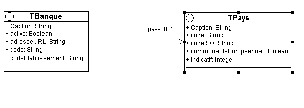
Dans cet exemple on associe un pays à une banque. La relation se traduit par un attribut oidPays et un attribut Pays dans la classe TBanque.
La cardinalité 0..1 signifie qu'un objet de type TBanque peut être associé à un objet de type TPays sans que cela soit obligatoire. Relation de type liste
Relation de type liste
Une relation de type liste est une relation entre deux classes A et B où pour un objet de type A peuvent correspondre "n" objets de type B et pour un objet de type B peuvent correspondre 0 ou 1 objets de type A. Ce type de relation est de cardinalité 0..1-m.
| Note : L'implémentation d'un rôle liste dans une classe A génère l'implémentation d'un rôle référence dans la classe B. |
Exemple
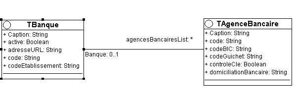
Dans cet exemple on associe des agences bancaires à une banque. La relation se traduit par un attribut oidBanque et un attribut Banque dans la classe TAgenceBancaire et par un rôle liste AgenceBancaireList dans la classe TBanque.
Relation de type Association
Une relation de type association est une relation entre deux classes A et B où pour un objet de type A peuvent correspondre "n" objets de type B et pour un objet de type B peuvent correspondre "m" objets de type A. Ce type de relation est de cardinalité m-n ou *-*.
L'implémentation de cette relation se fait à travers une classe intermédiaire appelée classe d'association C. La classe A contient un rôle liste vers la classe B, roleBList. La classe B contient un rôle liste vers la classe A, roleAList. La classe C contient des références vers la classe A et la classe B.
| Note : Le Framework Ligne 1000 ne supporte pas nativement d’association autre que binaire, il est toutefois possible d’implémenter explicitement ces associations en utilisant des classes d’associations. |
Exemple
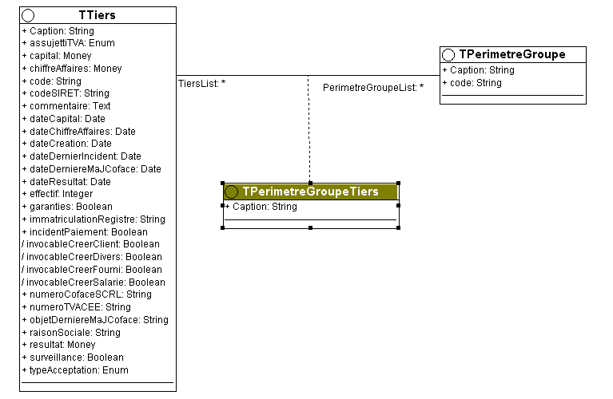
Un tiers peut être associé à plusieurs périmètres groupe. Un périmètre groupe peut être associé à plusieurs tiers. La classe d'association est TPerimetreGroupeTiers. La relation se traduit par un rôle liste PerimetreGroupeList dans la classe TTiers, un rôle liste TiersList dans la classe TPerimetreGroupe, un rôle référence Tiers et un rôle référence PerimetreGroupe dans la classe TPerimetreGroupeTiers.
Propriétés
Agrégat
L’agrégation est une association non symétrique qui exprime un couplage fort et une relation de subordination. Elle représente une relation de type « ensemble / élément ». Une agrégation peut notamment (mais pas nécessairement) exprimer :
- qu’une classe (un « élément ») fait partie d’une autre (« l’agrégat »),
- qu’un changement d’état d’une classe, entraîne un changement d’état d’une autre,
- qu’une action sur une classe, entraîne une action sur une autre.
A un même moment, une instance d’élément agrégé peut être liée à plusieurs instances d’autres classes (l’élément agrégé peut être partagé).
Une instance d’élément agrégé peut exister sans agrégat (et inversement) : les cycles de vies de l’agrégat et de ses éléments agrégés peuvent être indépendants.
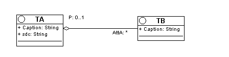
Exemple de rôle agrégation
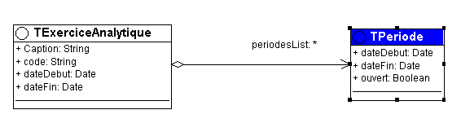
Composition
La composition est une agrégation forte. Les cycles de vies des éléments, les « composants », et de l’agrégat, le « composé », coïncident : si le composés est détruit, ou copié, ses composants le sont aussi. A un même moment, une instance de composant ne peut être liée qu’à un seul composé. Les « objets composites » sont des instances de classes composées.
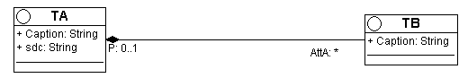
Exemple de rôle composition
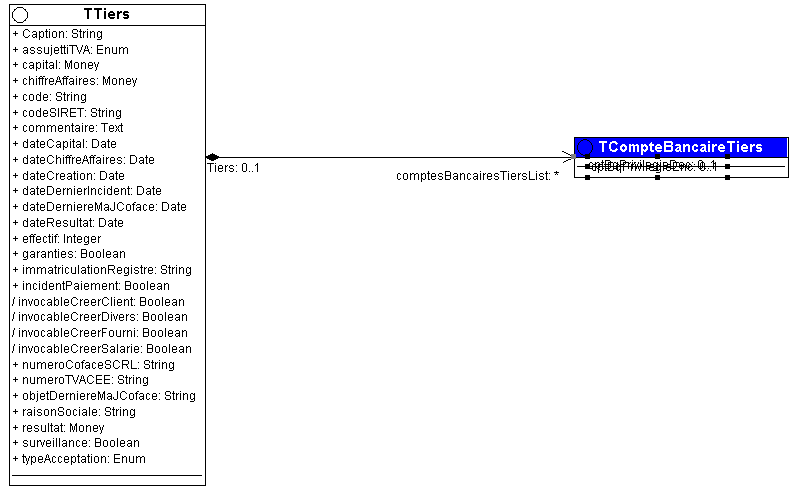
Création d'une relation
La création d'un rôle se fait au moyen de l'assistant de création de rôles.
- Occupez les deux classes qui font partie de la relation.
- Cliquez droit sur la première classe et choisissez la fonction Ajouter un rôle.
| Tip : Il est aussi possible d’utiliser l’éditeur de Diagramme de Classe pour définir une relation. Dans ce cas, il suffit de « tirer » une relation entre les deux classes présentes sur le diagramme. |
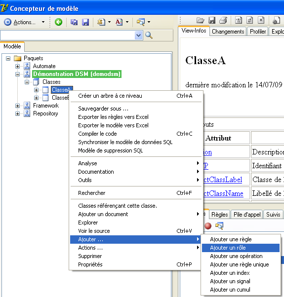
Vous accédez à l'assistant de création de rôles :
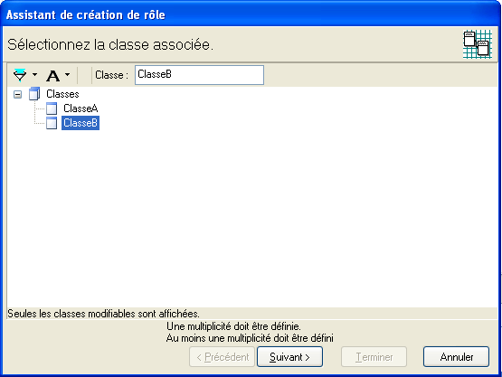
Sélectionnez la classe associée. Les cases à cocher dans la partie basse de la fenêtre vous permettent de filtrer les classes disponibles. Cliquez sur le bouton Suivant.
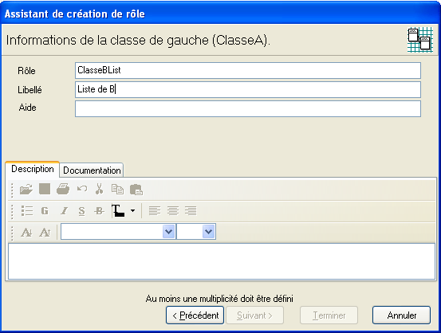
Pour la classe de gauche (pour rappel vous retrouvez le nom de la classe de gauche dans la partie haute de l'assistant), saisissez le nom du rôle et un libellé et ajouter une description. Cliquez sur le bouton Suivant.
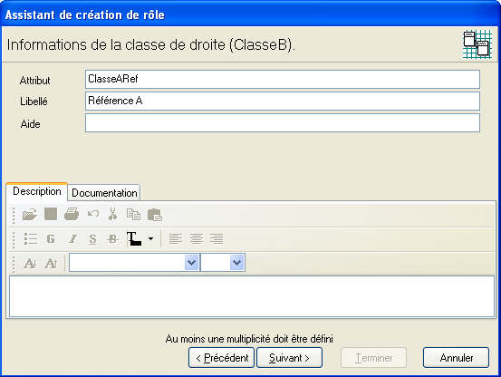
Pour la classe de droite (pour rappel vous retrouvez le nom de la classe de droite dans la partie haute de l'assistant), saisissez le nom du rôle et un libellé et ajouter une description. Cliquez sur le bouton Suivant.
Pour changer la cardinalité double-cliquez sur les cardinalités sur l'image. Les valeurs possibles sont : 0..1, 1, 0..*, 1..*. Pour définir une association binaire, double-cliquez sur le carré en bas de l'image. La classe d'association est représentée et il faut saisir le nom de celle-ci (ex. : PerimetreGroupeTiers).
Pour définir un agrégat ou une composition, double-cliquez sur la relation du coté de la classe où vous souhaitez l'agrégat ou la composition. Le symbole graphique se change pour passer d'une relation simple à un agrégat et ensuite à une composition. Définir un agrégat :
Définir une composition :
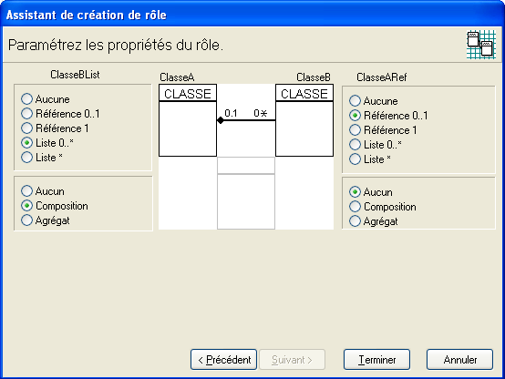
Pour finir la vue dans le concepteur de modèle des éléments de la relation :
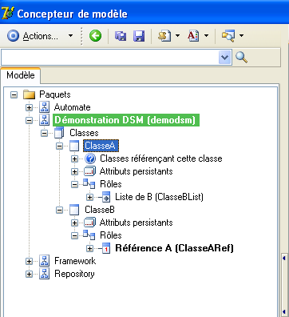
Propriétés d'un rôle
Il est possible de paramétrer des options avancées pour les rôles. Cliquez droite sur le rôle à modifier, ensuite sur la fonction propriétés. Les propriétés d'attribut de rôle se trouvent sur l'onglet Options de rôle.
Les options proposées dépendent de la cardinalité du rôle.
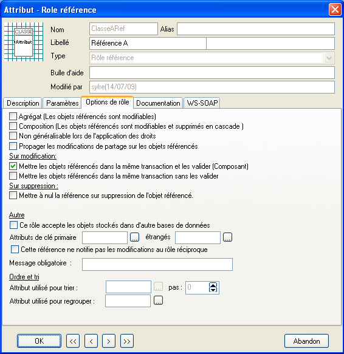
- Non généralisable lors de l'application des droits.
- Si l'option est sélectionnée, la généralisation d'un droit ne sera pas appliqué à travers cette référence.
- Propager les modifications de partage sur les objets référencés.
- Si cette option est sélectionnée, lors de la modification du niveau de partage de l'objet tenant le rôle, par exemple de niveau Société à niveau Dossier, les objets référencés par le rôle seront aussi changer de niveau. Ce changement de niveau automatique est toujours appliqué pour une composition.
- Mettre les objets référencés dans la même transaction et les valider
- Si l'option est sélectionnée, tous les objets liés seront mis en transaction si l'objet propriétaire du rôle est mis en transaction. Les objets liés seront validés au moment de la validation de la transaction.
- Mettre les objets référencés dans la même transaction sans les valider
- Si l'option est sélectionnée, tous les objets liés seront mis en transaction si l'objet propriétaire du rôle est mis en transaction. Les objets liés ne seront pas validés au moment de la validation de la transaction.
- Mettre à nul la référence sur suppression de l'objet référencé
- Si l'option est sélectionnée au moment de la suppression de l'objet, il va mettre à nul sa référence dans les objets liés. Sans cette option la suppression ne peut pas se faire pour un objet qui est référencé.
- Supprimer les objets de la liste sur suppression
- Cette option provoque la suppression en cascade des objets liés à la suppression du propriétaire du rôle.
- Ce rôle accepte les objets stockés dans d’autre base de données
- Cette option permet d’accepter que des références vers des objets d’une autre base de données soit acceptées.
- Attribut étranger de clé primaire
- Permet de définir comme clé de la relation un autre attribut que l'identifiant de l'objet pour un rôle liste. Par exemple si on souhaite une liaison par code et non par des identifiant, il faut renseigner "code" dans l'option Attribut étranger de clé primaire.
- Cette référence ne notifie pas les modifications au rôle réciproque.
- Si cette option est sélectionnée, les modifications de l'objet référencé ne seront pas notifiées à l'objet tenant le rôle.
- Attribut utilisé pour trier
- Permet d'utiliser un tri différent de la clé primaire pour les rôles listes.
- Attribut utilisé pour regrouper
- Permet de définir un regroupement. Les regroupement affecte la manière dont l’ordonnancement est effectué. Voir ci-dessous.
- Ce rôle est ordonnés sur l’attribut de trie
- Les rôles listes et les rôles d'association peuvent être ordonnés à condition qu’il soit trié et que l'attribut de trie soit un entier.
Lorsqu’un rôle est ordonné il numérote automatiquement les objets qui y sont insérés en affectant une valeur à l’attribut de trie. De plus si un attribut de regroupement est utilisé cette numérotation est réalisée par groupe de sorte que chaque groupe reste ordonné. Lorsqu’un rôle est ordonné son comportement est le suivant :
- Si un attribut de groupe est utilisé il est affecté de la valeur du groupe immédiatement précédent.
- L’attribut de trie est affecté de la plus grande valeur du groupe incrémenté du pas du rôle.
- L'insertion dans le rôle peut provoquer la renumérotation des autres objets du rôle.
- L'attribut de trie reste modifiable par l'utilisateur ce qui lui permet de réordonner la liste. Les doublons sont acceptables.
Rôles et clés étrangères de la base de données
Le framework utilise l’intégrité assurée par les clés étrangères de la base de données relationnelle pour assurer l’intégrité des objets en relation.
La création d'un rôle de type référence détermine la création d'une clé étrangère entre les tables de chaque classe de la base de données.
Exemple
Pour la relation AgenceBancaire – Banque, dans la classe AgenceBancaire on crée la colonne oidBanque qui réfère l'identifiant de la banque dans la table Banque. Une clé étrangère est créée pour la table AgenceBancaire qui met en liaison les colonnes oidBanque de la table AgenceBancaire et oid de la table Banque.
Les conséquences de la création d'une clé étrangère pour une classe A qui référence un objet de classe B sont :
- On ne peut pas introduire dans l’attribut oidB de la classe A des valeurs qui n'existent pas dans l’attribut oid de la classe B.
- On ne peut pas supprimer un objet de la classe B tant qu'il est référencé par un objet de la classe A, à moins d’avoir utilisé l’option du rôle Mettre à nulle la référence sur suppression de l’objet référencé.
Dans certain cas le framework ne génère pas de clé étrangère :
- Lorsque la classe référencée est située dans une autre base de données. C’est par exemple le cas lorsqu’une classe de la base de données Master est référencée dans le modèle.
- Lorsque le rôle référence une Interface. Dans ce cas des objets appartenant à des classes différentes sont susceptibles d’être placés dans le rôle.
— Modèle — Développement DSM —
| Whos here now: Members 0 Guests 0 Bots & Crawlers 1 |